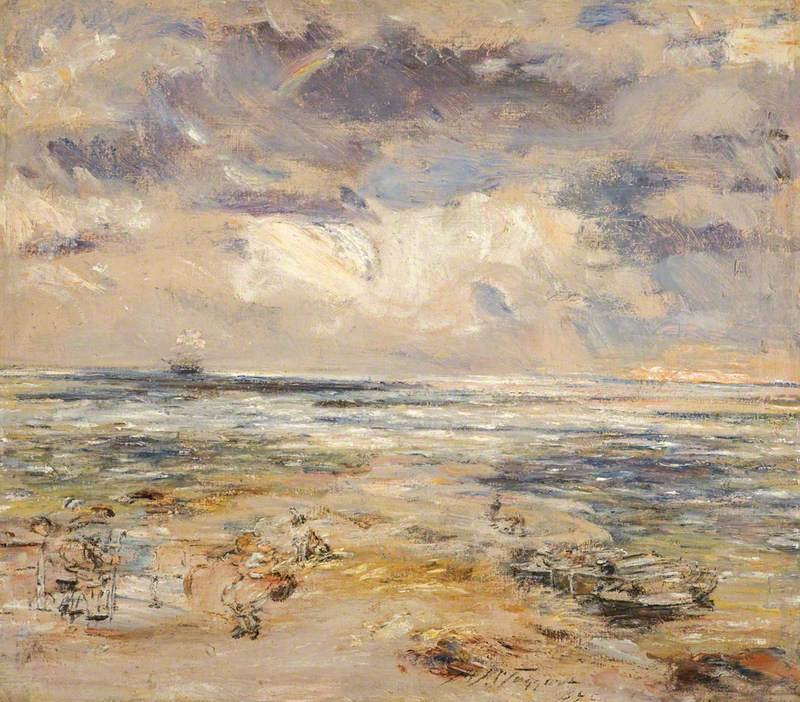

S7 · Refugees and Today’s Debate
- What was the points system of 1967?
- Complete: “There are two official languages, but…”
- When did Parliament pass the Canadian Multiculturalism Act?
Answer key
- A way of choosing immigrants for their education, language, skills and age, not their origin.
- “…there is no official culture.”
- In 1988.
- discover private sponsorship of refugees
- read official figures and talk about numbers and trends
- take part in a debate about today’s immigration levels
Look at the painting
Describe, then interpretCore
- What can you see in the sky and on the sea?
- Who stays on the shore?
- How does the painter’s style express emotion?
Answer key
- A stormy sky with a faint rainbow; a ship sailing away far out at sea.
- Older members of the clan, left behind on the shore.
- Quick, loose brushstrokes: the figures almost dissolve into the wind, sea and light, like a memory.
After the war in Vietnam, hundreds of thousands of people fled Vietnam, Cambodia and Laos, many by boat. Canada created a new private sponsorship programme: families, religious communities and associations could sponsor refugees themselves, finding them housing and helping them settle. More than 50 per cent of the Southeast Asian refugees who came to Canada were privately sponsored. By 1985, Canada had admitted more than 98,000 refugees from Vietnam, Cambodia and Laos.
In November 1986, the United Nations High Commissioner for Refugees awarded the Nansen Refugee Award to the “People of Canada”. It is the only time the award has been given to an entire population. Governor General Jeanne Sauvé accepted it on their behalf; the medal is kept at Rideau Hall.
Sources: The Canadian Encyclopedia, “Southeast Asian Refugees”; UNHCR photo archive, 1986.
Every year, the Government of Canada publishes how many permanent residents it plans to admit. The 2027 to 2029 Immigration Levels Plan sets a target of 380,000 permanent residents in each of 2027, 2028 and 2029, within a range of 352,500 to 422,000.
| Category, annual target 2027 to 2029 | Number |
|---|---|
| Economic immigrants | 244,700 |
| Family (spouses, partners, children, parents, grandparents) | 81,000 |
| Refugees and protected persons | 49,300 |
| of which privately sponsored refugees | 17,550 |
| Humanitarian and other | 5,000 |
| Total | 380,000 |
The government’s stated commitments: to reduce the temporary population to less than 5% of the total population by the end of 2027, and to keep permanent resident admissions at less than 1% of the population after 2027.
Source: Immigration, Refugees and Citizenship Canada, “Supplementary Information for the 2027-2029 Immigration Levels Plan”, canada.ca, published with the federal budget of 5 November 2026, consulted on 6 November 2026. Figures are annual targets for 2027, 2028 and 2029.
Read the figuresCore
- Which category is the largest?
- What fraction of the total are refugees and protected persons, roughly?
- How many refugees are sponsored by citizens?
- What does the government want to limit, and why, in your opinion?
Answer key
- Economic immigrants: 244,700.
- About one eighth (49,300 out of 380,000).
- 17,550 privately sponsored refugees each year from 2027 to 2029.
- Population growth and temporary residents, probably because of pressure on housing and services.
Talking about numbers and trendsCore
Complete with: roughly, more than, a quarter, the majority, to rise, to fall.
- of Canada’s population is an immigrant (23.0%).
- Economic immigrants make up of the target.
- The government wants the temporary population to below 5% of the total population.
Answer key
- Roughly a quarter
- the majority
- fall
DebateStretch
“Canada should welcome more newcomers.” Prepare a two-minute talk for or against, using one historical example (S2 to S6) and one figure from Document 2. Use whereas, given that, insofar as, provided that.
Answer key
Model: Given that private citizens sponsored more than half of the refugees from Southeast Asia, welcome is not only a government matter. Whereas the 2027 to 2029 plan limits admissions to 380,000, history shows that newcomers built the country, from Birchtown to the Prairies. I would argue that Canada can welcome more, provided that housing and services follow.
Expanding your vocabulary
| Word | Meaning | Example |
|---|---|---|
| a refugee | a person forced to leave their country because of war or persecution | Canada welcomed refugees from Vietnam. |
| to sponsor | to support someone officially and pay for their needs | Families sponsored refugee families. |
| a permanent resident | a newcomer allowed to live in Canada for good | 380,000 permanent residents a year |
| a target | a number you plan to reach | The target for 2027 is 380,000. |
| to admit | to let someone enter | Canada admitted 98,000 refugees by 1985. |
| a trend | a general direction of change | The trend is towards lower numbers. |
Petit glossaire en français
refugee : réfugié · sponsor : parrainer · permanent resident : résident permanent · target : objectif, cible · trend : tendance
Your French town wants to welcome a refugee family. In French, explain to the town council how private sponsorship works in Canada and why it won the Nansen Medal.
- Learn the vocabulary.
- Prepare your two-minute talk for the debate.
- Revise S1 to S7 for the final task: one key date, one key figure and one key quotation per lesson.